TIMOTHY S.
ROBINSON
ROBINSON
I have bipolar disorder, which is a mood disorder that affects your emotions and thoughts. There’s no cure so now I’m trying to stabilize myself with medication. I was only properly diagnosed three years ago but it has affected me for a very long time. Much longer than three years. Bipolar has ruined me in so many ways; family, money, friends, lovers, work. Every area of my life has been affected. I have a tattoo on my hip of nine strikes with a coffin at the end. I’ve attempted suicide four times so I have five lives left. Suicide seems the only option when I’m suffering a low. The one thing that saves me is my children. What keeps me alive is the thought of my kids looking over into my coffin. I don’t want to put them through that pain. I miss my wife. She’s my ex-wife now. I miss my children. They will always be my what if. I am not my mental illness, I just don’t know how to make it go away so I can really be me. I really am a good guy.
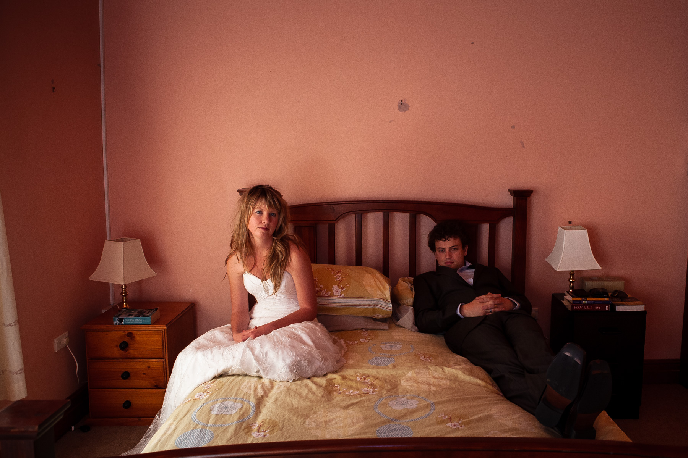
We want to grow old together. I never believed in the Hollywood meaning of love - in love one month, not the next. It was my grandparents who showed me how to make it work. Mostly very simple things.
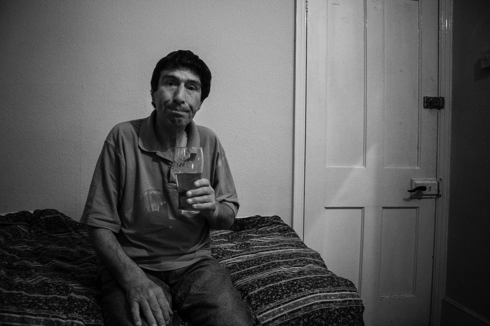
I’ve lived in the same area since I was a boy. I’ve been delivering milk for twenty-five years now, and have seen many things come and go. The pub is still here though, so all is well. I don’t like the train ride into the city very much, it frightens me a little, I don’t trust it for some reason. I’m quite comfortable near home anyway, so no need to go out very often. I sometimes go for a pint with the gentleman up the hall. He’s very polite and doesn’t mind having a chat. We don’t talk much when we go out, I just enjoy the company of someone else.
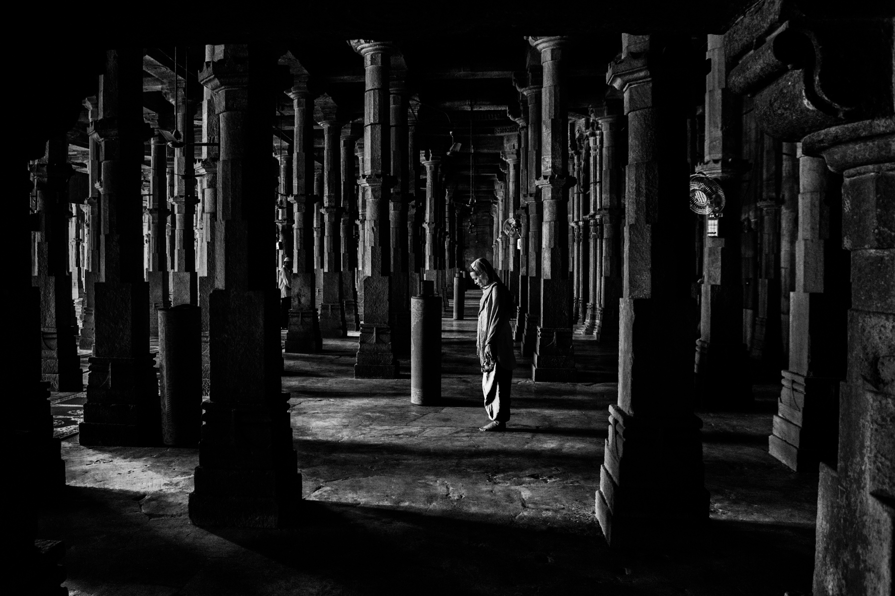
Sometimes I feel like this world is fake. Like existence is just one big joke and we’ve all been fooled into playing along.
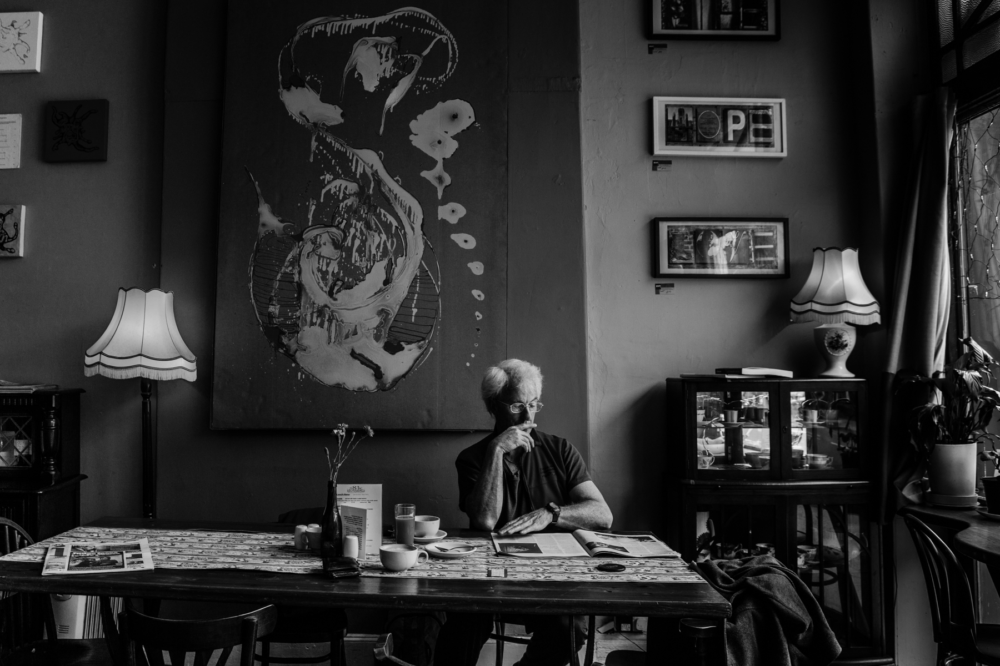
I want to understand this world. My surroundings and the people. By doing this I can understand myself more. I’ve wondered what it is that I’m looking for. It’s not happiness, more of a certain something. I don’t know, still looking.
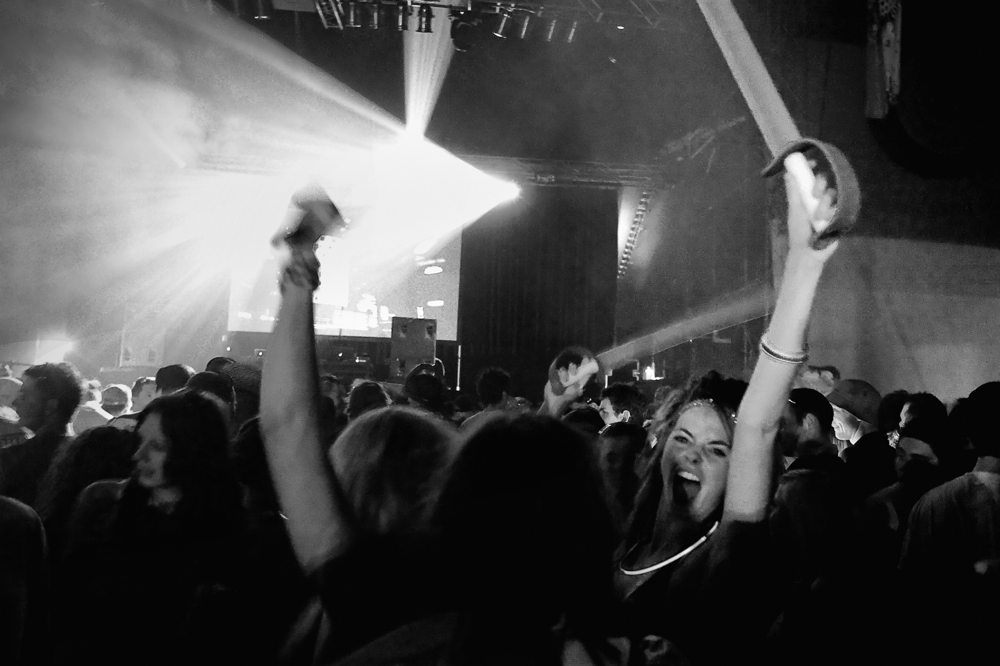
That ecstatic feeling of being completely and utterly free, there’s nothing like it. I close my eyes, look inside, and my body just gets lost in the sound.
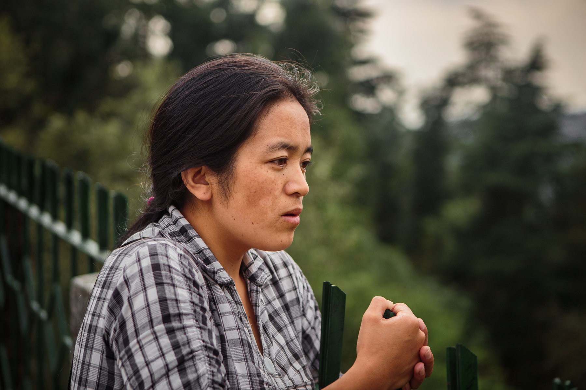
I left Tibet as a refugee when I was a young girl. The walking had to be done all at night so the border guards wouldn’t see us. The journey took around a month. I remember planning, talking and wondering about it for years. Then all of a sudden the day came when it was time to go. The hardest was knowing I’d never come back. I haven’t spoken to my parents in eight years. I live with my sister now. When we sit down to eat together, memories of home come flooding back. Then I wonder what everyone is doing at home and how they are. I believe in rebirth. I believe that I’ll come back to earth as another animal after I die. I’m afraid of this. I don’t want to live again. Once is more than enough for me.
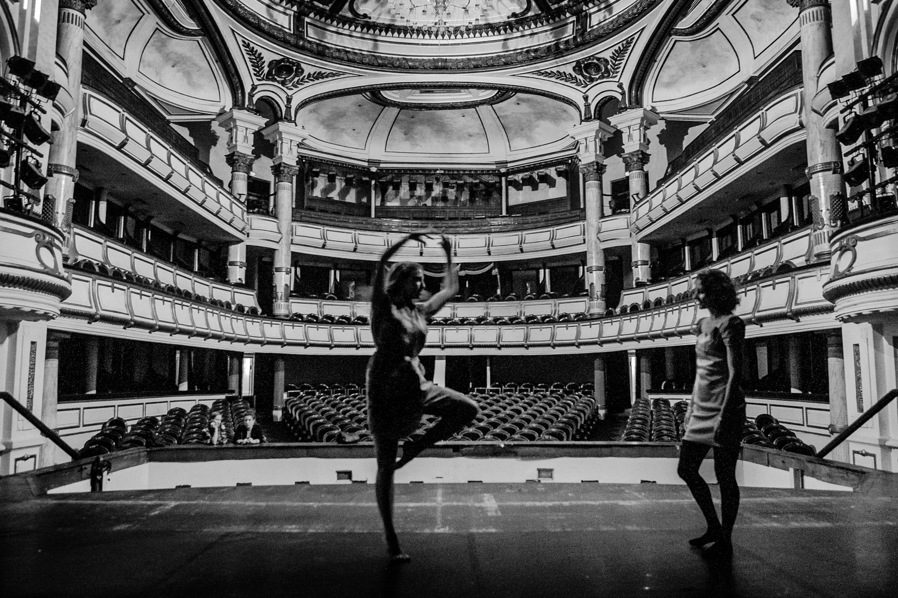
I still remember when I went on stage for the very first time. I loved it. I was only three years old but I told my mum I was going to be a dancer and never looked back. Just jumping up in the air and spinning around makes me feel like a little girl again. Free and happy with not a care in the world.
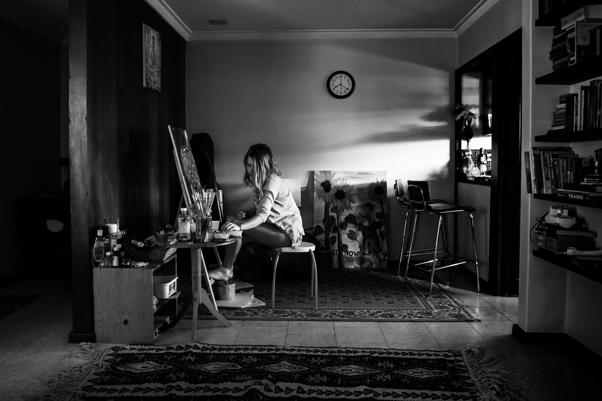
I grew up in a country town where I didn’t ever fit in. My reality was books and pictures and music. I lived with my books and the characters became my friends. This way of growing up showed me that I don’t have to accept what I was given. I don’t have to accept things at face value and I’m in charge of my own fate.
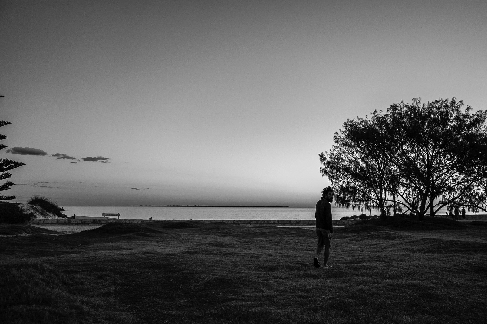
Something came to me at work one day. What I pictured was me walking across my country. I saw all the experiences I’d have and people I’d meet. I ignored it for some time, but it kept plaguing me, so I had no choice in the matter. I had to leave. The thought of doing it started off as something small, but it really has become a dream of mine. My dream has cost me a lot. Not only money, more than just money, but I can’t quit. If I quit now that means I’ve given up. I can’t do that. I’ve been walking for five years, and I lost who I was to the road a long time ago. The ocean keeps me company so I don’t get lonely.
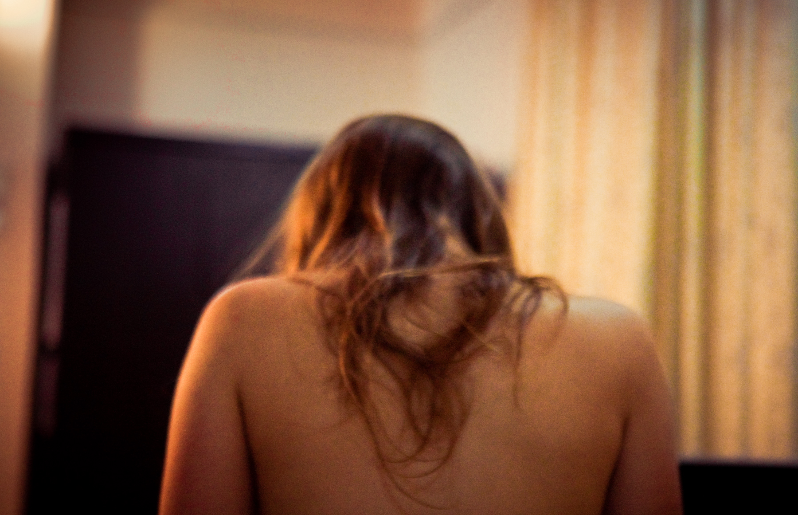
I was living away from home and more than anything I just liked his company. He was very good looking and confident, but he had a gentle and caring way about him. I've got a wild streak in me, but I found the quiet side of him most attractive. We met at the teaching centre where I was working. There was a movie night there, he came up to me afterwards, and that's how the story began. From then on we saw each other every night. For some reason I opened up to him like I hardly ever do. I shared my demons and fears and desires with him. Where I've been and where I'm going. He told me his secrets in return. The morning that he left town we had breakfast together. Afterwards I photocopied some posters. Then we walked down the hill together and said goodbye. He gave me a kiss on the cheek and that was the end of it.
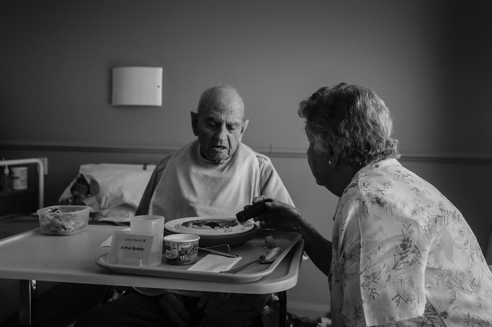
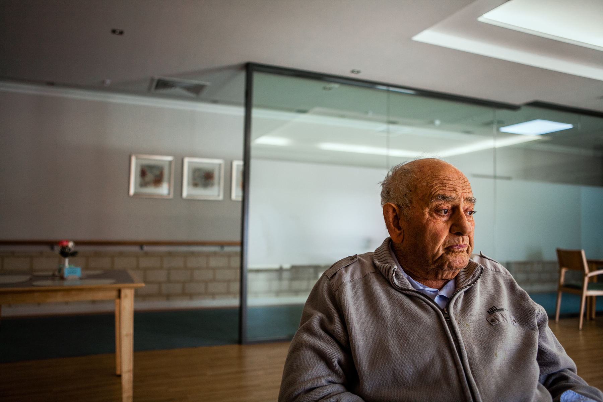
We’ve been together for over sixty years now. We’ve been through everything together. He was very mischievous when he was young. Always an absolute gentleman though. We met at the show and somehow he managed to steal me away from the boy that I went with. We married within a couple of years. He’s sick now though. It started a very long time ago, and he’s slowly gone down hill. It seems like just yesterday that we were dancing around together as a couple. I bought him a yellow doll that sings his favourite song and put it in his room. There’s a tree out the front of our home that he likes. I got a picture taken of it for him. It’s not much, but it makes him happy for a while.
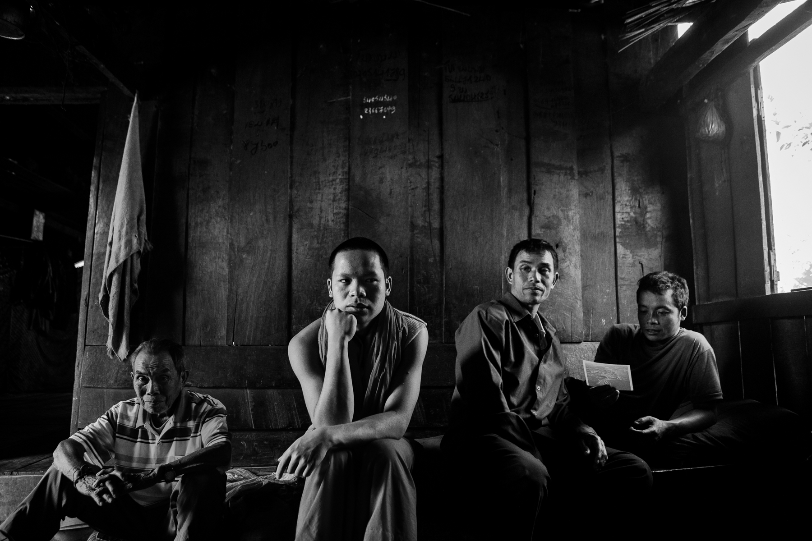
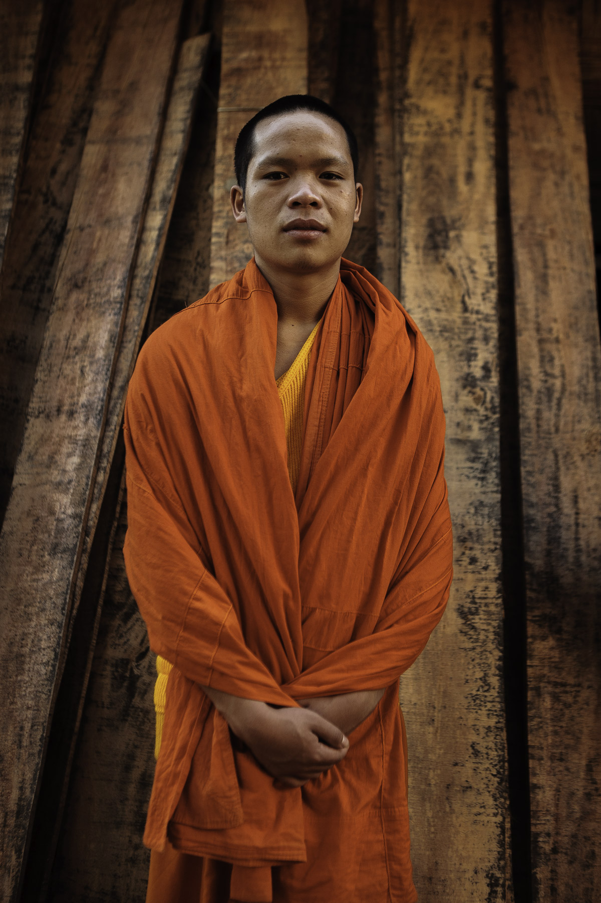
I left home to join the monastery as a novice monk two years ago. Life here is very regulated. Up at four in the morning every day. In bed with lights out by nine. There are morning prayers and daily meditation, I also take part in alms, but a lot of my time is spent at school or in study. Here I have my own living quarters that I share with two friends. On my wall, just above my bed, I have a poster of a singer who I like, and also an elderly monk who I look up to and respect. Eventually I’d like to leave the monastery and study to be a lawyer.
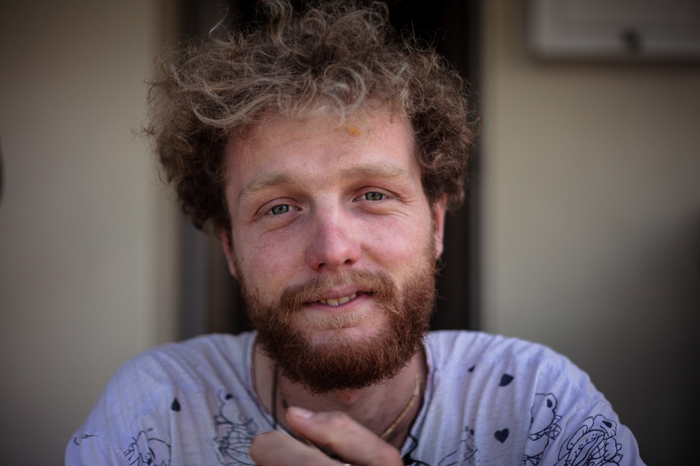
I find it very hard to show anyone my lyrics or songs. This isn’t because of stage fright or anything like that, it’s because I’m scared of what people will think. I’m scared because when I write a song I feel like I’m being completely honest and showing the world who I really am. I feel like I’m stripping bare on a stage and telling people all of my secrets. There’s a cafe I go to and write. Each time I’m quietly hoping that I don’t see anybody I know because I’m quite happy in my own world.

I drink because I don’t want to see what’s inside my own mind.
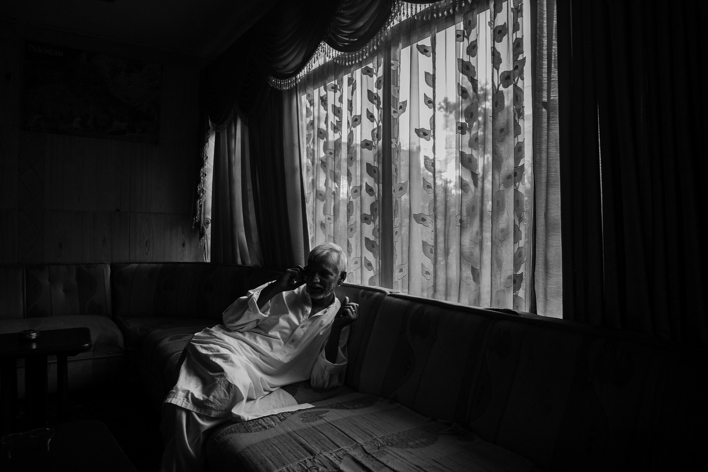
There were bombings on the streets of my city some time ago. I was hoping it was just that once, but things have become worst with time. Everyone walks around in constant fear now. A simple walk down to the shops could turn out to be my final moments on earth. Living in fear is no way to be. The truth is that most of us want nothing to do with the violence. We’re just trying to get on with our lives. I’ve had three calls from my wife today and it’s not even lunchtime yet. She’s probably just worried. We do our best.
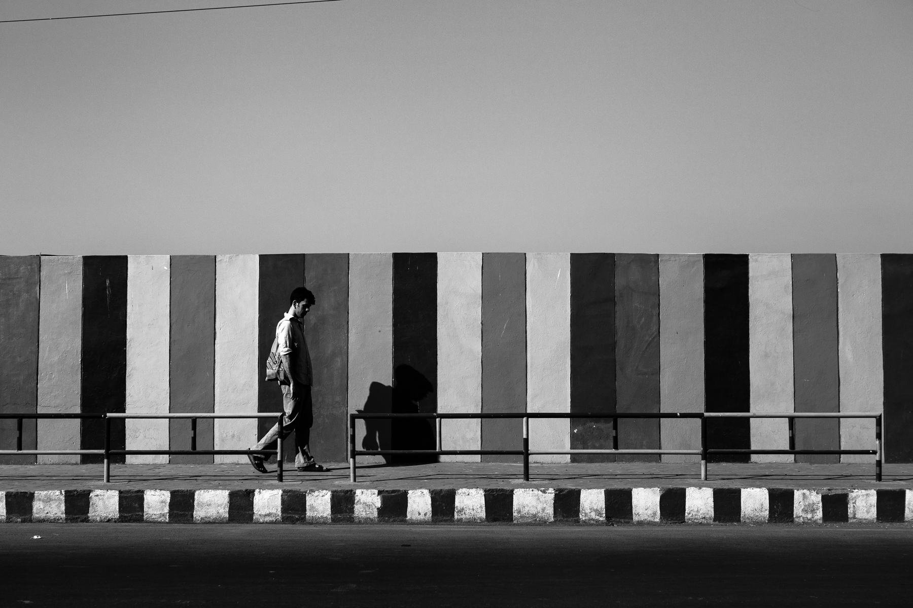
Right now I’ve made a mission out of collecting portraits of people. I don’t take the pictures, I find them on the streets of each city I visit. It’s a little adventure. I don’t know anything about the person, but I have a photograph of them. I know what they look like, so that means I can imagine who they really are. Maybe we could be friends or lovers. Maybe we’ll meet some day and I’ll feel like I’ve known them for years already. It’s all just a game but that’s the fun of it. When I go home, because I will go home, I want to buy a horse and carriage. I’ll be a gypsy.
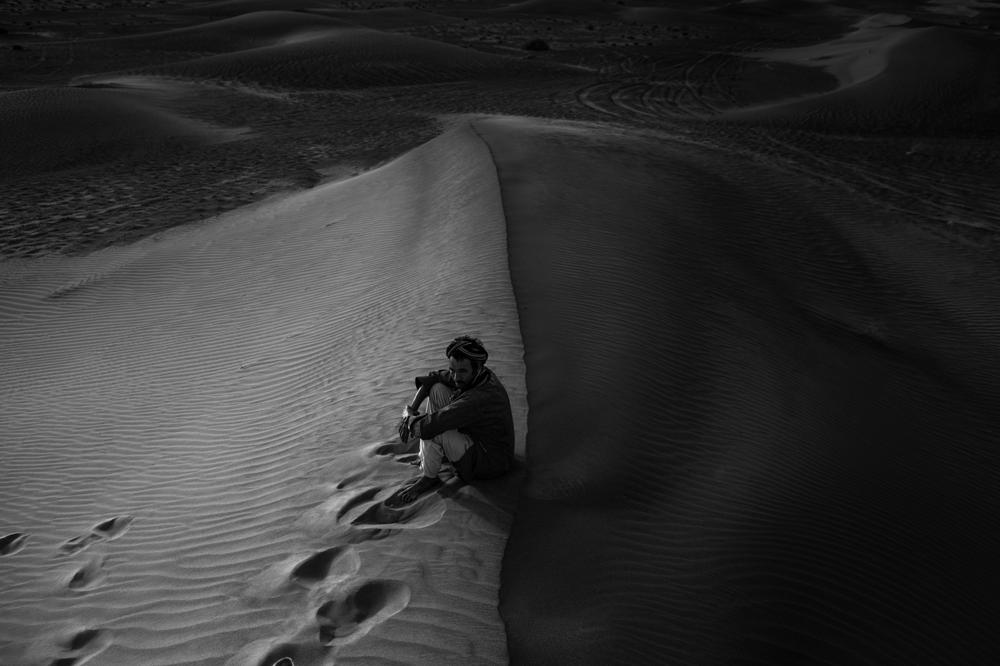
Time stands still here, that’s what I like about it. It’s always calm and the desert never changes. It’s my home.
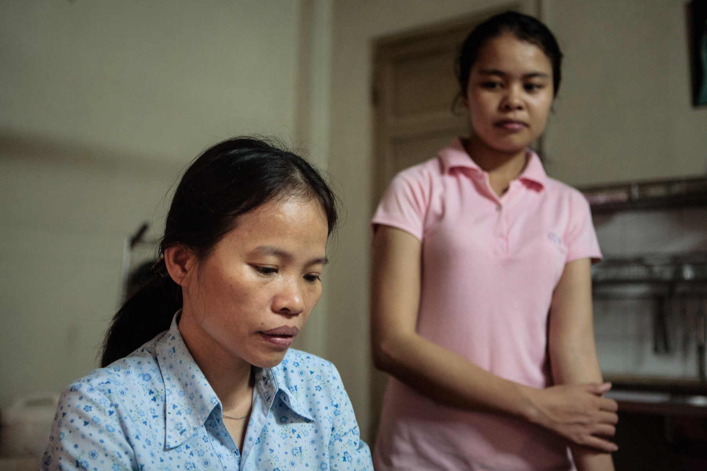
I couldn’t care less what the facts are. Keep your truth, I don’t want it. Nothing has ever given me hope and warmth like the Church has. Sometimes after I go for prayer or service, I take one step outside, back onto the streets, and it’s like a slap in the face. I’ll die with a peaceful heart and that’s more than most can say.
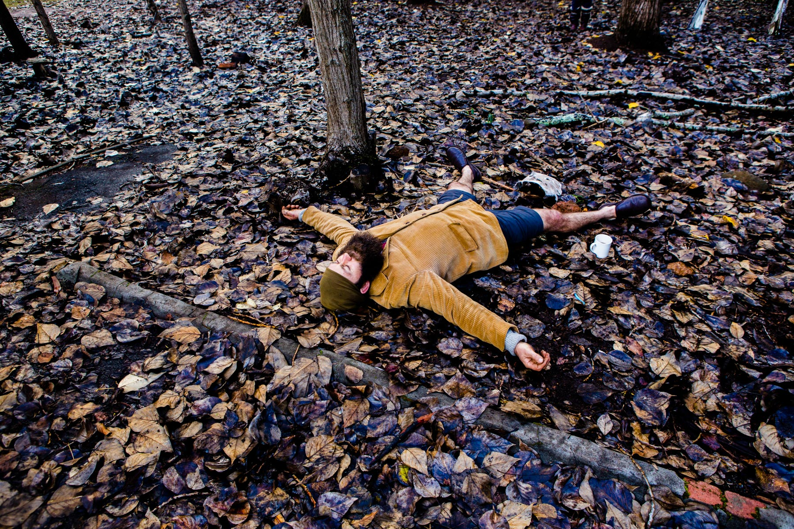
I grow my own fruit and vegetables at home. It would be a lot easier to buy them, maybe I’m just old fashioned, but I’m trying to change the world in my own way. It takes time.
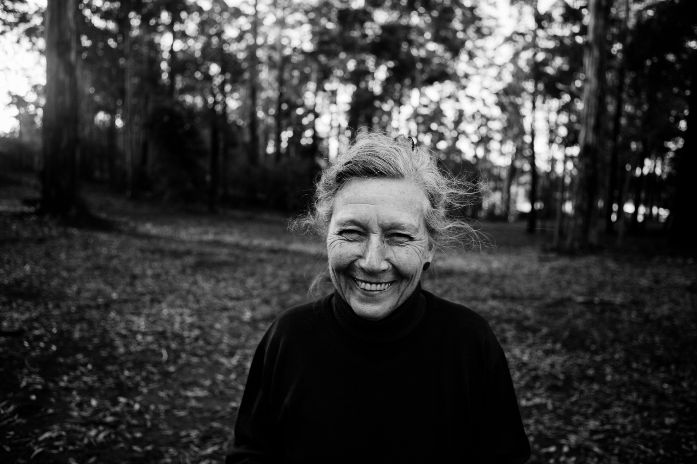
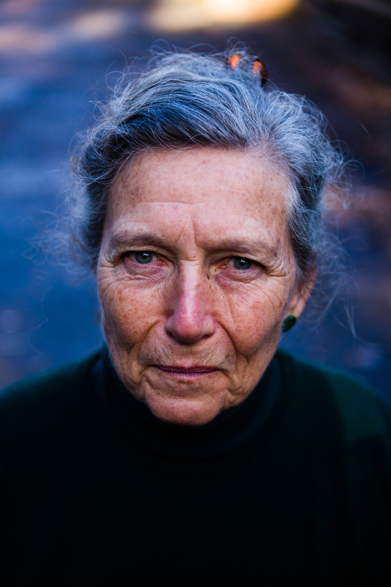
I’ve committed my life to something that’s more important than me.
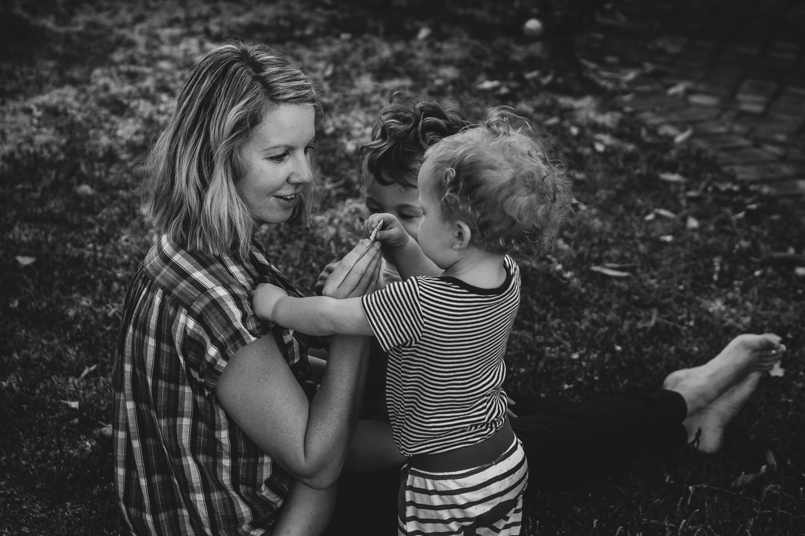
When we’re driving somewhere and Xavier starts to cry; I stop the car straight away, go over to him, and try to stop the tears however I can. To everyone else it’s just a baby crying because he’s hungry or tired; but I’m his mother and he’s my little boy. I’ll do whatever I have to do for him.
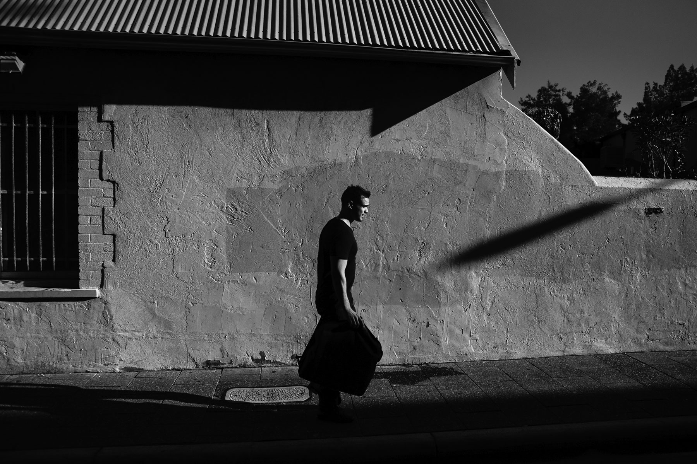
I’m gay. Saying that for the first time in public, showing people the real me, was one of the most frightening experiences of my life. I grew up in a place where homosexual expression was considered a dark and regretful sin. I didn’t want to accept the advice that was given to me. I didn’t want to hide myself away and only live half a life. More than anything else, I want to love and be loved. I have a desire for affection and intimacy. After time these desires became burdens rather than beautiful things to aspire to. I grew up feeling like a coward, not a real man, a lesser human. At the start of the day when I decided to tell everyone the truth, I was aware of the possibility that something could change very quickly. To my surprise, that day was liberating to say the very least.
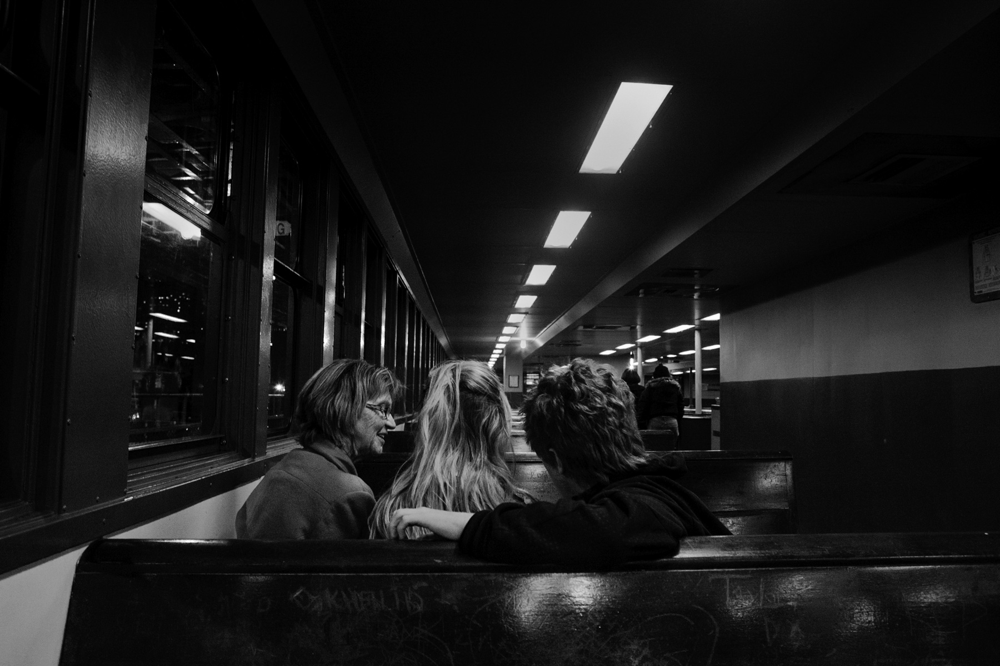
I lost my father recently. He was a very gentle man. He even looked peaceful when he passed away. I loved him dearly, but he was very sick in the end so it was a blessing that he went. My memories of him when he was healthy are good. When I was a young girl, he created his own name for me. He called me Skreita. Then when it was a time to go to school, he pumped up the tires on the bike, checked the bottom of the seat for spiders, and sent us all off at once. I still call him dad when he comes up in conversations. On his birthday I go to his grave and just sit there with tea and cakes and family. He’s gone away, but he’ll never really be gone. He’s dad forever and always.
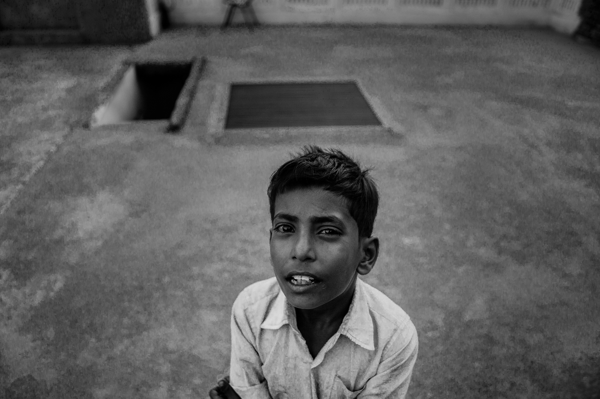
My dad is a distant person. He’s kind and he cares, I know that, but there’s very little intimacy or closeness between us. When I do get a hug I love it. It’s one of my favourite things. It’s like a bear hug and it feels like he’ll never let go.
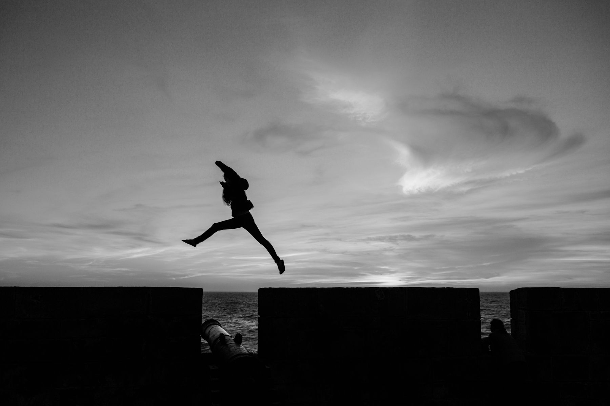
The most terrifying thing for me is not knowing what my own truth is. Where I fit into this world and what my place is. I’ve looked long and hard at myself, I’ve gone well beyond the surface, and I still can’t find what I’m looking for. It’s a very frightening thing to expect so much from myself, yet it somehow not to become what I’d expected and hoped for. Partly it’s just a desire to be accepted and loved. For who I am, not for who I could be.
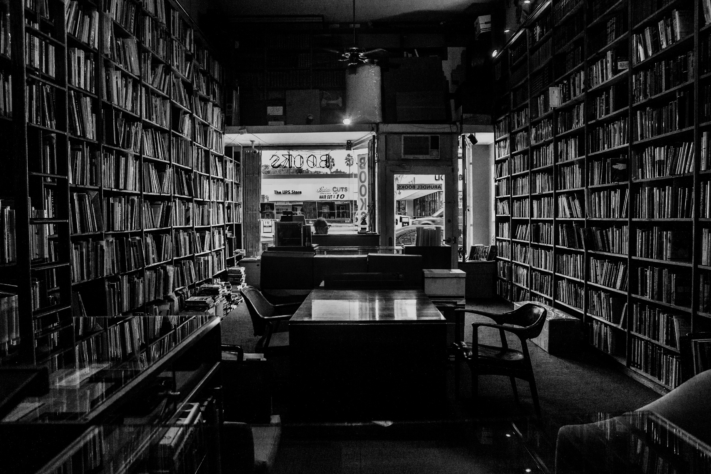
My dad’s story telling abilities were second to none. He used to bring out the detail and characters as if the story he was telling was more important and more alive than real life. Everything was just a part of one big play for him.
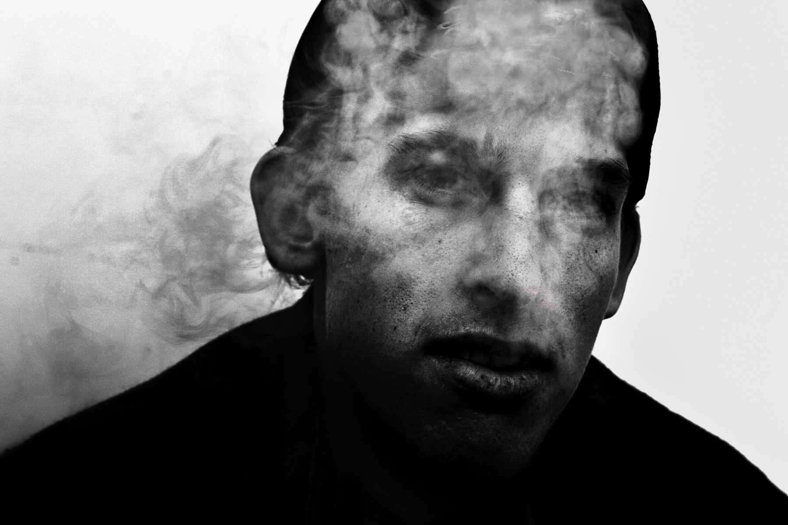
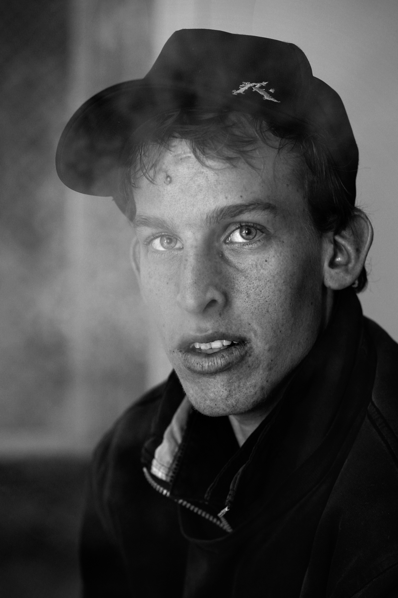
I used to be homeless. I’ve got a scar just near my left ribs from when I was stabbed in the park a couple of years ago. I went to sleep and this group came up to me in the middle of the night. Things are different now. I’ve just met a girl. It’s good.
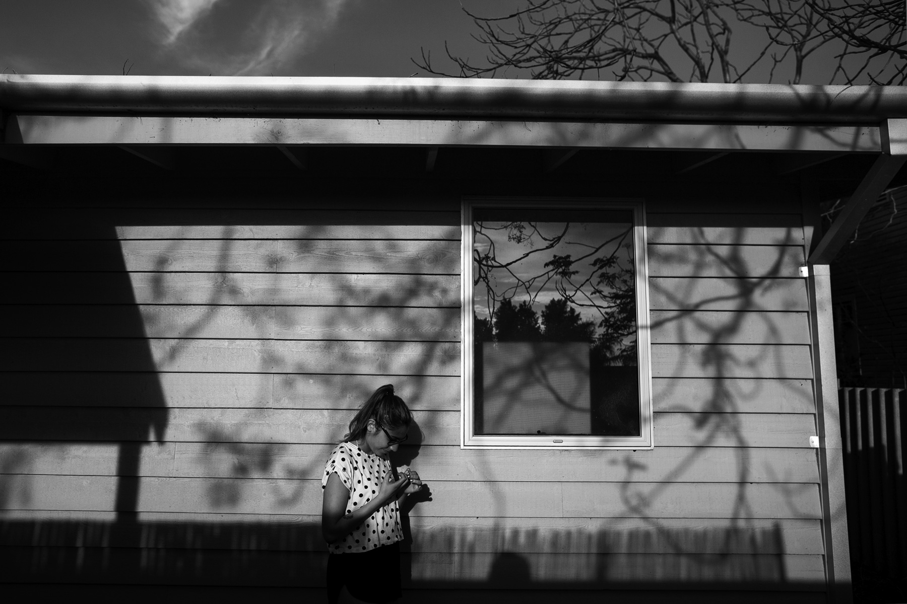
The way my parents raised me was their way - a strict upbringing with little personal choice or freedom. They gave me a good sense of right and wrong, but they smothered me and were over protective. I know they love me, but from the moment I could talk, I was told to listen. I want to be honest with my parents. I should be able to tell them how I feel without being judged or mocked. I don’t feel this way at all though. One thing I don’t like about me, is I get attached too easily. Sometimes I don’t want to be attached. I crave the freedom and independence that I didn’t have growing up. I say this, but it’s very frightening to say goodbye to people when the world looks very cold and lonely if I look at it by myself. I have a Mickey Mouse doll that I still go to bed with. It’s about as big as my arm. It’s embarrassing that I still have it, but it keeps me company. We all need some love.
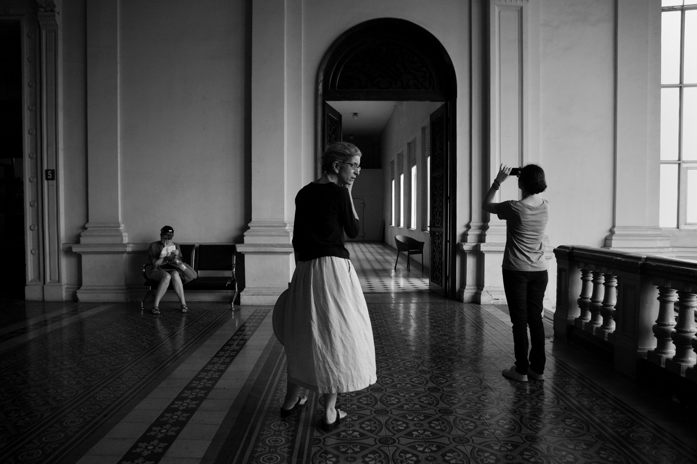
It was like a Sunday morning treat. Grandma, myself and mum would go for coffee and hot chocolate. We went to the same cafe and sat at the same table every Sunday. Then when the drinks came I’d steal the biscuits from their plate. They’d never eat them! So I always did.
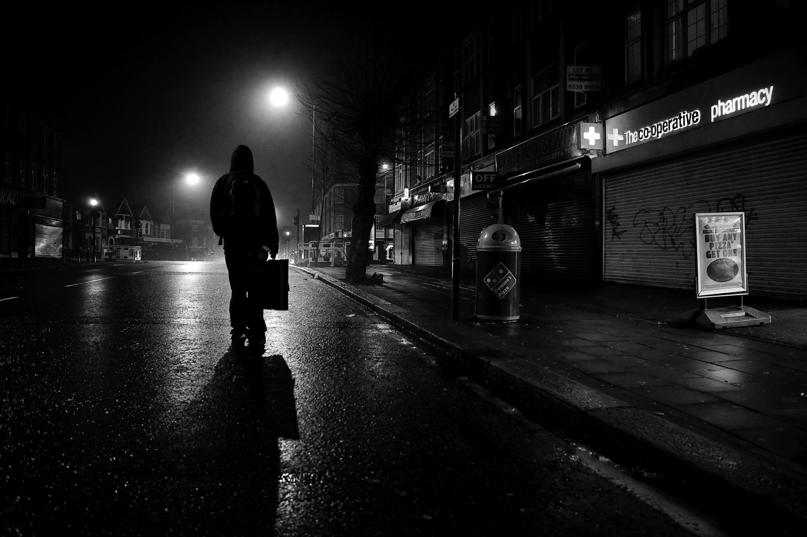
I was out with friends one night and we split up. I went my way, they went theirs. Somehow I got into trouble and I was attacked on the street. I was beaten to the point that I fell unconscious; and when I woke up I was in an alleyway with a bloodied and bruised body and face. It was a number of years ago that it happened, but sometimes it feels like it happened yesterday. I used to go out a lot, the party used to be something to look forward to, but not anymore. These days when I go out, I’m just very anxious and nervous. Not really a fate I would wish upon anyone. I have a black belt these days though. Won’t happen again.
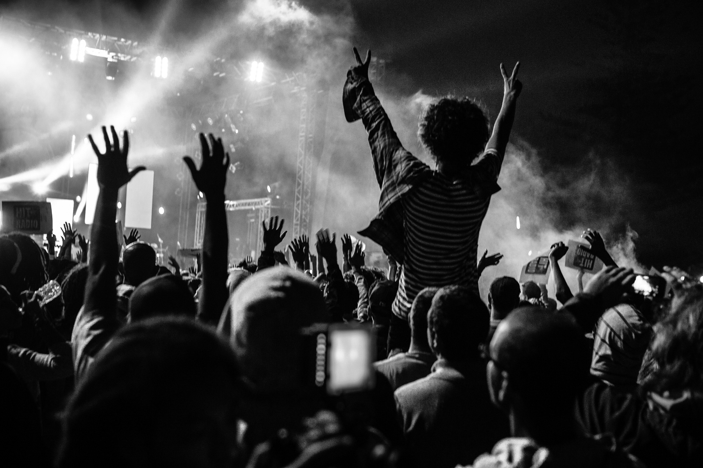
I’ve sold my soul to the blues. Nothing else really matters, only the music.
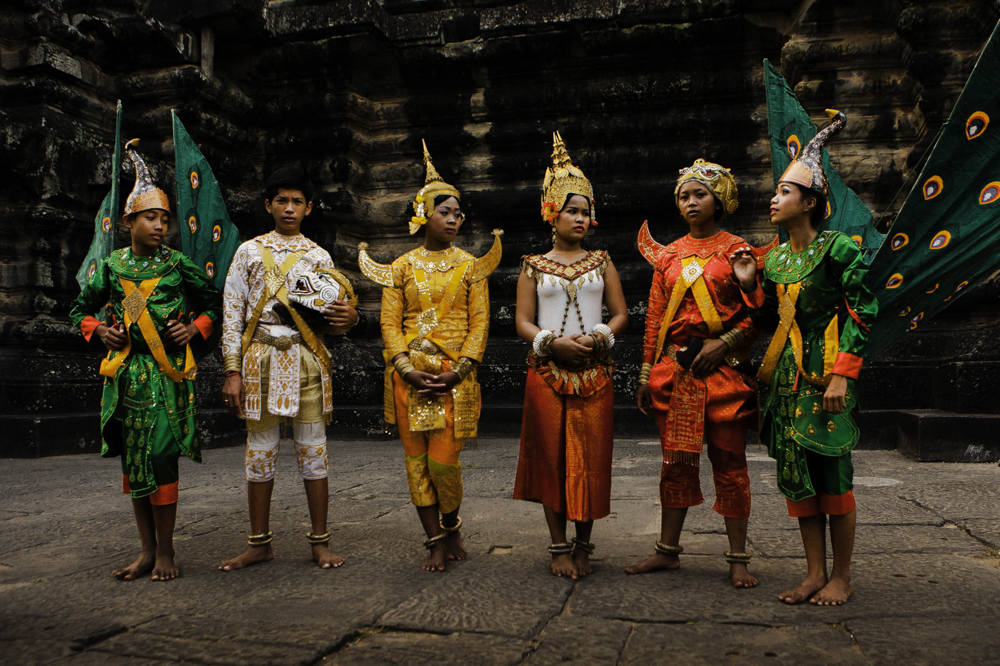
A lot of my job involves just standing around. That’s when I watch what’s going on around me. I’ve noticed that people seem to get lost in their own conversations or thoughts. You never notice the quiet ones because they’re always in plain clothes just sitting in the corner by themselves. Probably watching me watching them. It’s hard not to notice the loud ones, but they’re always the most entertaining to watch. I do wonder sometimes what couples would be like if they were separated from each other. If either of them would change at all or just find someone else to talk to.
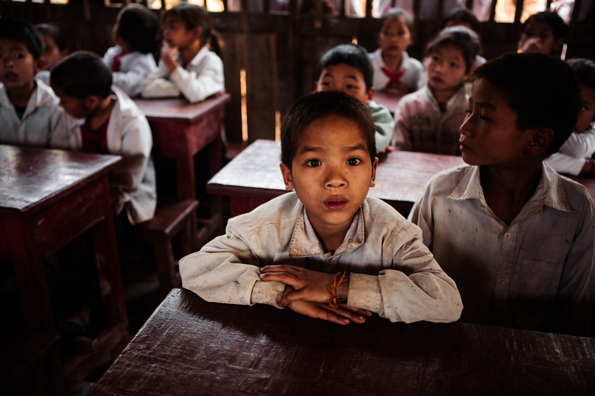
More than anything else, I want to see the world when I grow up. That’s it, that’s everything, just see it with my own two eyes. I want to know if the stories really are true.